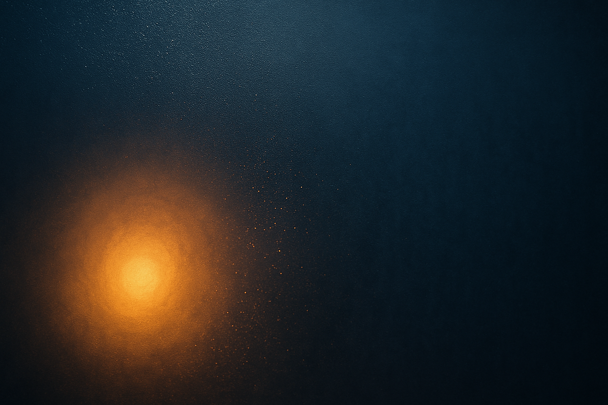
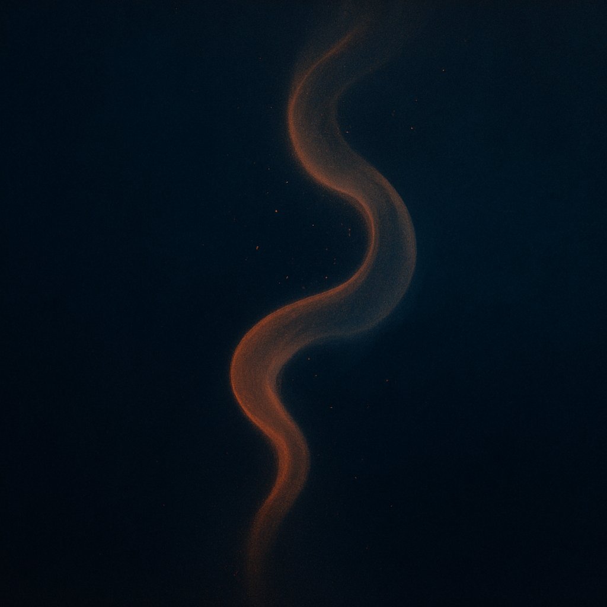
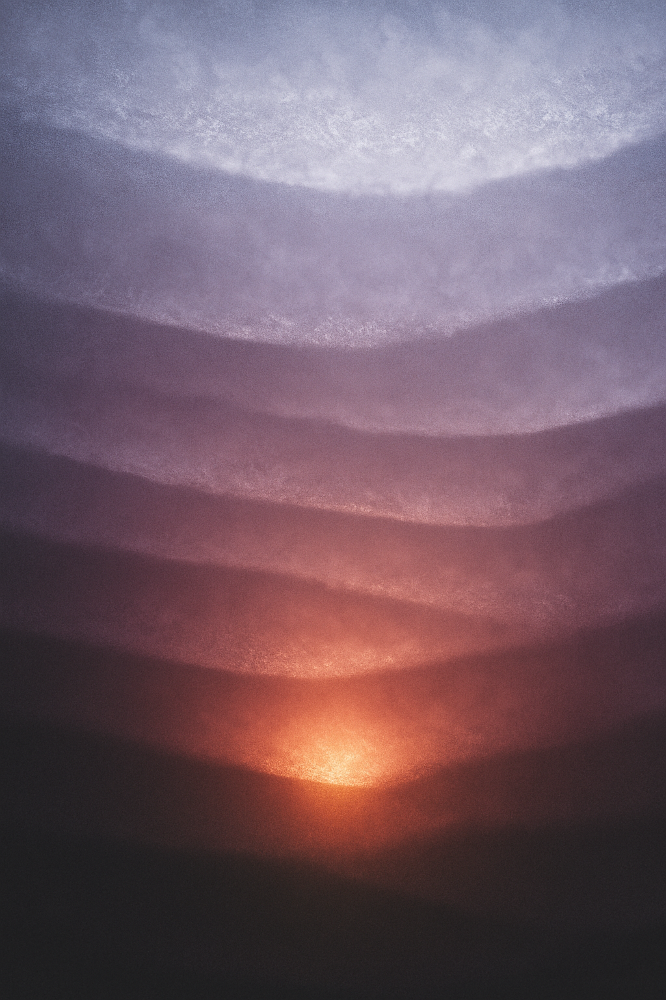

Review below. Reply approve to publish the Facebook post, or tell me edits.

Winter skin behaves differently, and your skin barrier is the reason. There is a particular kind of quiet that arrives with an Australian winter. The light goes flat by five. The house smells like the heater again. And your skin, which behaved itself all summer, starts feeling tight by mid-morning and looking a little dull by dusk. If you have noticed your face going quiet in July, you are not imagining it. There is a reason, and it is worth understanding before you reach for another product to fix it.
We are Redermis, and we make one LED mask designed for exactly this kind of slow evening. But before any device, the why is worth a few minutes of your time.
Cold air is dry air. The colder it gets outside, the less moisture the air can physically hold, so the ambient humidity around you drops. Then you walk indoors, switch on the heating, and that warm dry air pulls even more water out of everything in the room, including the surface of your skin. The result is a barrier that is working harder to hold onto moisture and not quite winning.
Two things happen on the surface as a result. First, the skin barrier (the outermost layer that keeps water in and irritation out) gets a little compromised, which is why your face can feel tight or look slightly flaky. Second, surface cell turnover tends to slow in the cold, so the older, drier cells sit on top for longer. Those cells scatter light instead of reflecting it cleanly, and that scatter is what we read as dullness. Your skin has not lost its glow. It has just lost a little of its even, light-reflecting surface.
Here is the part most of us get wrong in winter, and it is completely understandable. A long, hot shower at the end of a cold day feels like one of life's great small pleasures.
> Hot showers strip more barrier than cold air does.
The trouble is that very hot water strips the natural oils that hold your barrier together. You step out feeling clean and warm, and ten minutes later your skin feels tight. That tightness is not a sign of being properly clean. It is usually a sign the barrier has been stripped.
The instinct when skin looks dull is to do more: more actives, more exfoliating, more steps. In winter, that instinct can backfire. A stripped, slightly compromised barrier does not need to be sanded back further. It needs to be protected and left alone to recover. That is the quiet logic behind doing less, more consistently. Not minimalism for its own sake, just doing the few things that actually matter and doing them every day.
If you only remember one thing from this article, make it the next three shifts. They are small, and they are the whole job.
Drop the shower temperature a notch. Warm rather than hot, and a little shorter. You keep the comfort and lose most of the barrier-stripping. Your skin will feel less tight the moment you step out, which is the fastest feedback loop in skincare.
Winter is the season to move to a heavier, more occlusive moisturiser, the kind that helps seal water in rather than just adding it. Apply it while your skin is still slightly damp from cleansing so you trap that moisture instead of letting the dry air claim it. This single habit does more for winter dullness than almost anything else, because it supports the barrier directly.
This is the one that matters most, and it has very little to do with products. The end of a winter day is the natural moment to slow down, and most of us fill it with a screen instead. Try claiming ten minutes that are properly yours. Screens off. Lamp low. Whatever small ritual signals to your body that the day is done.
It will not undo the weather, and it is not a moisturiser. What a light-based step can do is support the skin over time as one calm, consistent part of an evening routine, the same way protecting your barrier and your wind-down does. Think of it as maintenance and a reason to sit still for ten minutes, not a winter cure.
The real benefit here is not a single hero product. It is the pause. Ten screens-off minutes at the end of the day, where the only task is to slow down, does something for your evening that no serum can. It lowers the volume on the day. Your skincare becomes part of that wind-down rather than another item on the list, and you are far more likely to stay consistent with a routine that feels like rest than one that feels like work.
If you use a light-based step, let it be one calm part of that ten minutes rather than the centrepiece. Sit, breathe, let the day settle. (Our LED mask slots into that wind-down if you are ever curious, but the ritual matters more than any device in it.) The aim is skin longevity through consistency, not a war on the season. Skin that looks duller in the cold can look brighter again with a little protection and a lot of patience. None of this is a cure for anything, and a richer moisturiser will not rewrite your winter. It just helps your skin hold its ground until the air warms up again.
So tell us. What is the one step in your winter wind-down you would never skip? Share it in the comments. We read every one, and half the best winter tips we know came from someone else's evening ritual.

First week of July and the heater is back on. Anyone else's skin suddenly feeling tight and a bit dull?
Here is the honest why. Cold dry air outside, indoor heating inside, and those very hot showers we all love right now quietly pull moisture out of the skin and leave it looking a little flat. Nothing has gone wrong. It is just the season.
So the answer probably is not piling on more product. Winter is a chance to simplify and slow down. What actually helps is the wind-down itself: ten minutes at the end of the day, screens off, lights low, letting your shoulders (and your skin) finally settle.
We are Redermis, a small Australian skincare brand built around exactly this kind of quiet evening.
Tell us: what is the one thing in your cold-night routine you refuse to skip? Hot-water-bottle crowd, heavy night cream crew, or ten minutes off the screens, which one is yours?
If you are ever curious what we do, our LED mask lives at redermis.com.au. No rush, just leaving the door open. Save this one for the next freezing evening.

Skin tight by mid-morning, dull by dusk? It is not you, it is July.
Here is the honest why.
Cold air holds less moisture, so the day pulls water from your skin.
Heaters dry the whole room out.
And those long hot showers feel lovely, but they strip the barrier a little every time.
What actually helps in an Australian July is not more, it is less.
Slow down. Layer a barrier moisturiser.
Protect the last ten minutes of the day for yourself, whatever that looks like for you.
Skin tends to settle when the rest of you does too.
Save this for the next cold night your skin feels off, and send it to the friend who runs the shower too hot.
What is your one non-negotiable on a cold night? Drop it below. Link in bio if you want to see our mask.
**Title:** Why your skin goes quiet in winter: the calming 10-minute evening ritual that actually helps for cold-weather skin
**Link:** https://redermis.com.au/products/medical-grade-silicone-7-wevelenghts-photon-led-mask-face-and-neck-red-light-therapy-flexible-facial-mask-repair-skin-wireless-use
**Description:** Dry skin in winter in Australia is normal, and here is why your face looks duller and feels tighter once the cold sets in.
1. Cold dry air pulls moisture from your skin all day.
2. Indoor heating and very hot showers strip what is left of the barrier.
3. Ten minutes at the end of the day, screens off, something rich on your skin, is the consistent fix.
A few barrier moisturiser tips help: go heavier in winter and apply to slightly damp skin to seal water in. Many of us pair that with a quiet wind-down, the same calm window people use for things like red light therapy at home or an LED face mask. Less about chasing results, more about an easy LED mask routine at home that you will actually keep doing. Save this pin for your July evening routine.
**Hashtags:** #WinterSkincare #WinterSkinTips #EveningRitual #SkincareRoutine #RedLightTherapy #LEDFaceMask #SkinLongevity
*Note: this pin reuses the Instagram image.*